| 日付 | 2017年5月28日（日） |
|---|---|
| 山域 | 御坂･天子山塊 |
| メンバー | 家族（長女・6歳、長男・3歳） |
| 山行形態 | 子連れ日帰り |
| アクセス | 車 |
| ルート (Map) | 精進湖駐車場 (8:40) - (9:38) 阿難坂 - (10:17) 三方分山 (10:36) - (12:05) パノラマ台 (12:39) - (13:17) パノラマ台下 - (13:47) 精進湖駐車場 |
週末の天気予報があまり良くなかったのだが、
直前に好転したので急遽山に行くことにする。
今回は妻はパスということで、子供2人を連れて出かける。
久々に富士山を眺めようと思い、富士山の北西にある
三方分山～パノラマ台を歩いてみることにする。
精進湖畔に車を停める。標高900m。
広い駐車場はガラガラで、停まっている車はほとんど釣り客のようだ。
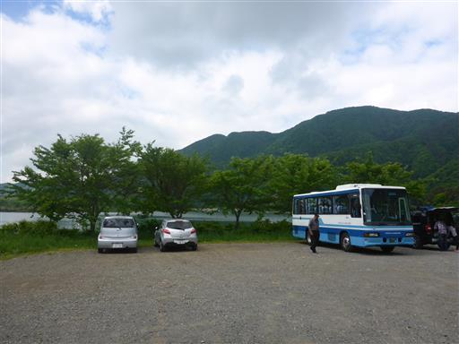
息子が駐車場でルアーを見つける。
娘が気に入って「さかちゃん」という名前を付け、ポケットに入れている…
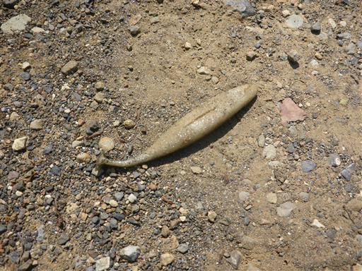
まずは車道を歩いて登山口を目指す。
この辺りに大杉があるらしいのだが、うっかり見学せずに通過してしまった。
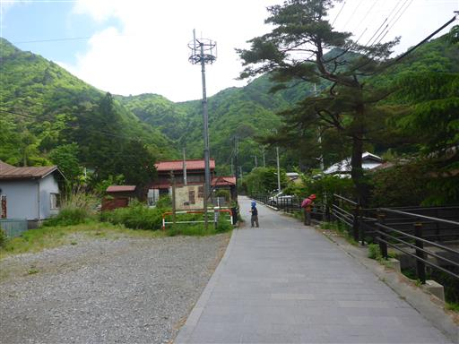
しばらく歩くと道は細くなり、林道から登山道になっていく。
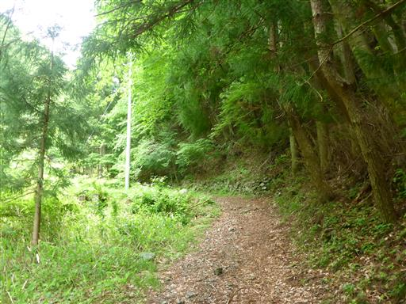
巨大な堰堤が何度か現れる。なかなか迫力のある構造物だ。
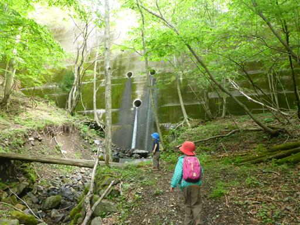
木の橋で何度も沢を渡る。
息子は最初緊張してなかなか渡れなかったが、徐々に慣れてくる。
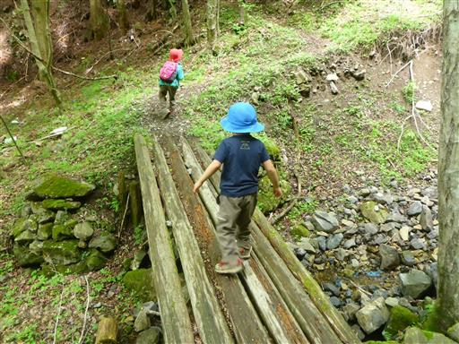
石が転がる道を登っていく。恐らくこの道は古の峠道で、非常に歩きやすい。
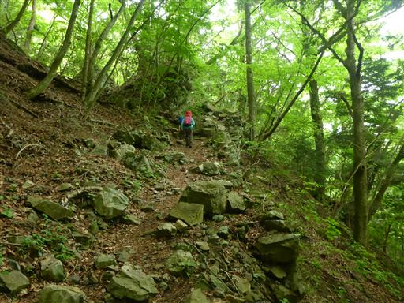
阿難坂に到着。ここは河口湖町と甲府を結ぶ峠道だった。
今では側に立派な車道のトンネルが掘られている。
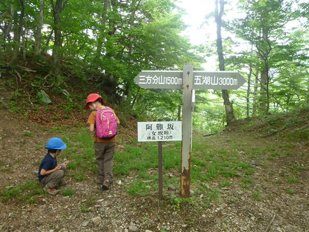
峠には地蔵が祀られているが、なぜか全て頭がなくなっている。
頭があった場所には石が置かれている。
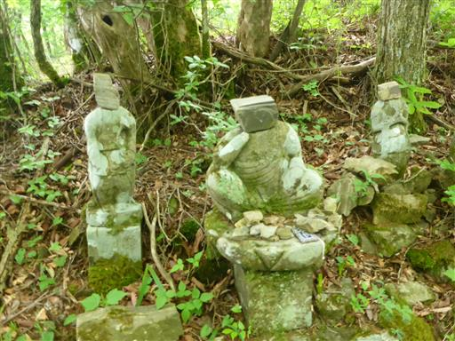
ここからは三方分山に向けて尾根道を歩いていく。
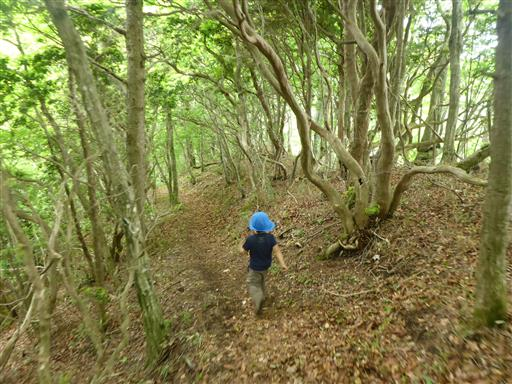
一際目を引く立派な木が立っている。
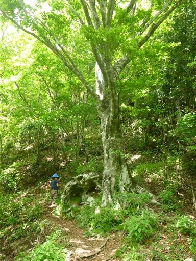
緑に覆われた登山道。すっかり夏の景色だ。
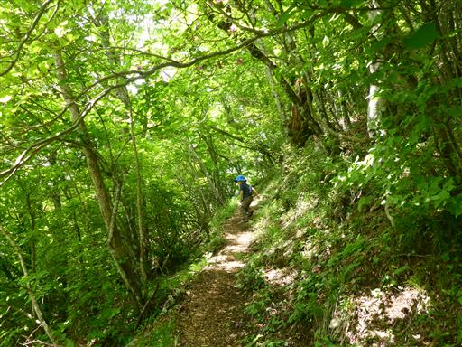
山頂に近くなると尾根が広がってくる。この辺りは大木が多い。
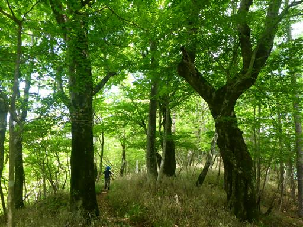
三方分山に到着。標高1422m。
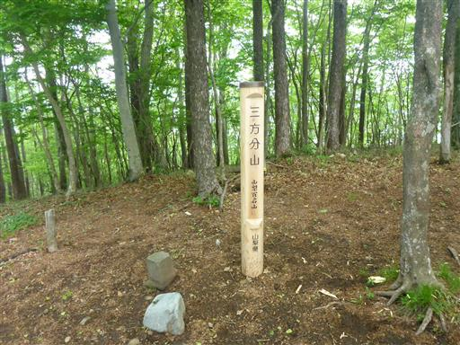
富士山方面の展望がある山ということで、もう少し展望の良い山と思っていたが、
一角が切り開かれているだけで、あとは樹林に覆われている。
肝心の富士山は残念ながら雲に隠れてしまっている。
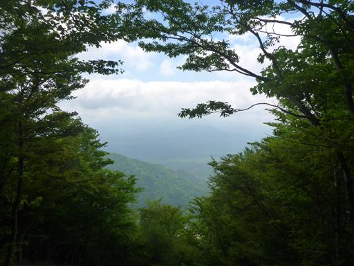
まだ昼食には少し早いため、おやつを食べたら次の目的地であるパノラマ台に向かう。
息子は棒を拾って歩いている。
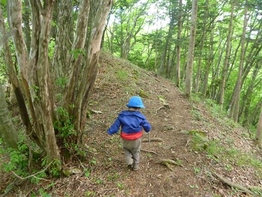
この辺りも風景全体が緑に包まれていて非常に美しい。
途中でショートコースの下山路があったが、子供たちはまだ元気そうなので、
このままパノラマ台を目指す。
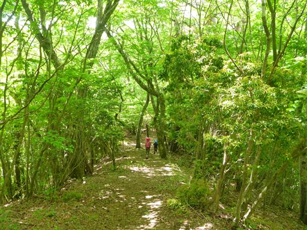
根子峠を通過。道中ルアーを巡って姉弟喧嘩が始まり、30分ほどうるさかったが
息子が譲ったことで、ようやく静かになった。
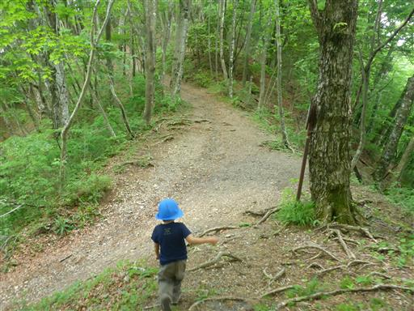
パノラマ台に到着。富士山の展望台として名高い場所だ。
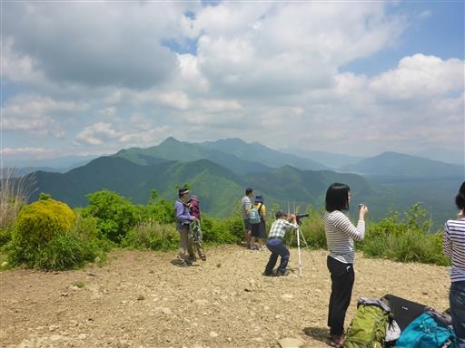
肝心の富士山は残念ながら雲の中だ。
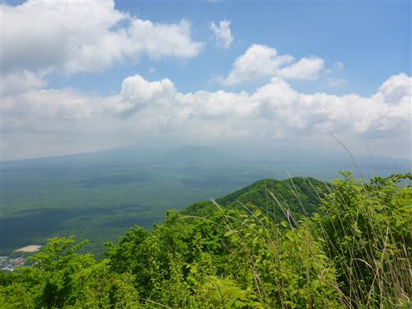
時刻は12時。ここで昼食をとる。
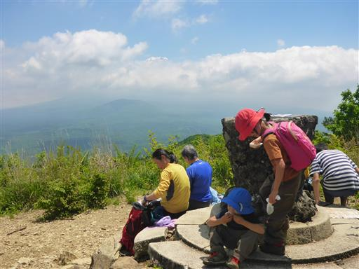
歩いてきた道を見下ろす。右手に見える湖畔に車を停めて、
左に見える三方分山経由でここまで歩いてきた。
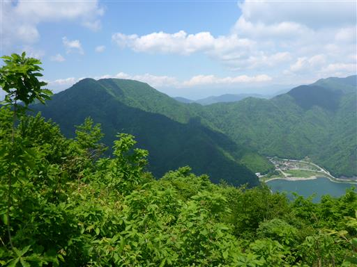
しばらくすると雲の上に富士山の頭が見えてきた。
何も見えないより頭だけでも見える方がずっと良い。
下に見える山は大室山で、富士山が抱えているように
見えることから「子抱き富士」と呼ばれている。
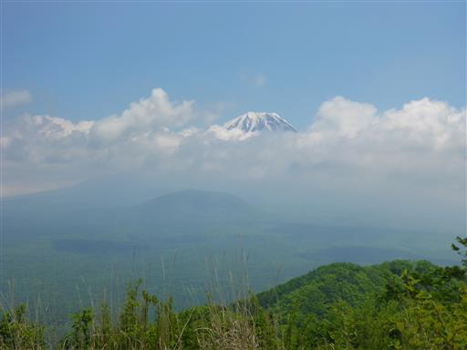
下山は根子峠から直接下る道を歩く。この道もよく整備されていて歩きやすい。
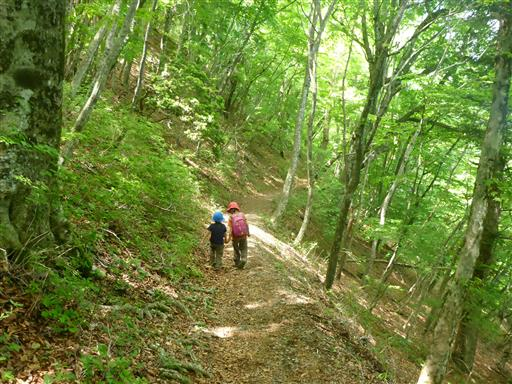
急斜面の場所には木の柵が取り付けられている。
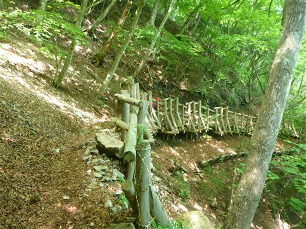
精進湖畔に下山する。
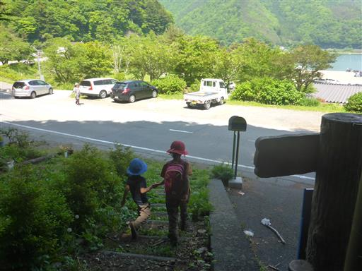
精進湖とその奥に、やっぱり頭だけの富士山が見えている。
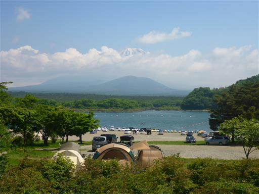
精進湖で少し遊んでから帰ることにする。
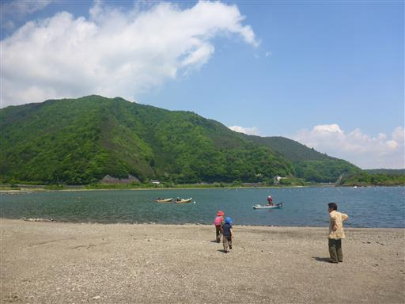
水はさほどきれいではない。人が多いので石投げ遊びは禁止。
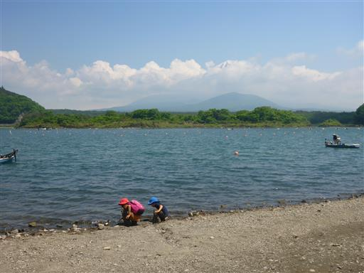
ボートがたくさん並んでいる。ボートに乗って釣りをしている人が多い。
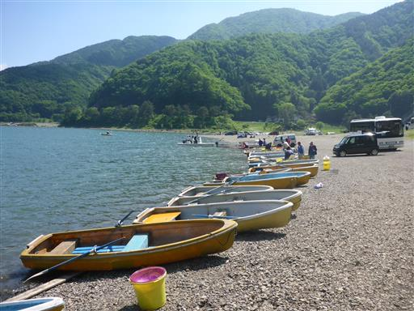
車道に戻らず、そのまま湖畔を歩いて駐車場に向かうことにする。
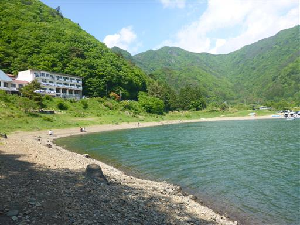
息子が魚の骨を発見。近くには何故か犬の死骸があった。
湖で溺れて打ち寄せられたのだろうか？
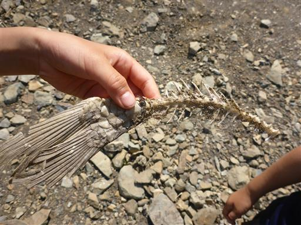
駐車場に戻ってくる。今回は4時間程度のコースタイムの山だったが、
息子は難なく歩くことができた。
4時間歩けるようになると、今後の山の選択肢が広がりそうだ。